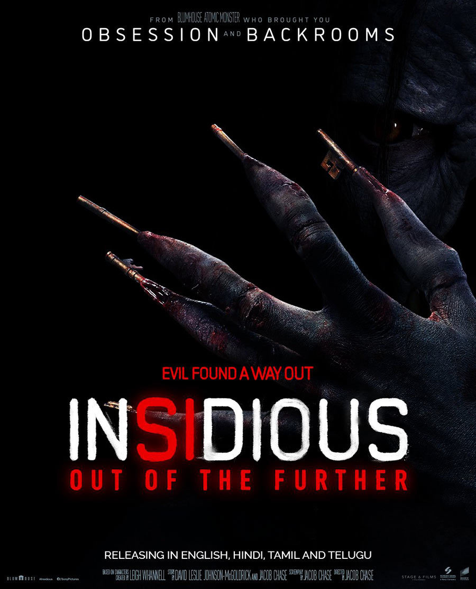

Movies

Release Date: 2026
Director: (TBD)
Cast: (TBD)
Genre: Horror / Supernatural
Runtime: (TBD)
IMDb: N/A (Upcoming)
Story: The Insidious saga continues, taking us deeper into the astral plane known as "The Further" — a dark realm where the dead linger and malevolent spirits prey on the living. This next chapter expands the terrifying mythology, introducing new characters who must confront the shadows that have haunted the Lambert family for over a decade. As the boundaries between the living world and The Further blur once again, a new nightmare begins — one that no one may be able to wake up from.
Interesting Facts:
• The Insidious franchise was created by James Wan and Leigh Whannell, and has collectively grossed over $700 million worldwide on tiny budgets.
• The first Insidious (2010) cost just $1.5 million and became one of the most profitable horror films ever made.
• The "Further" — the film's astral dimension — was inspired by classic horror like Poltergeist and Twin Peaks.
• Lin Shaye's character Elise Rainier became one of the most beloved paranormal investigators in modern horror.
• Patrick Wilson made his directorial debut with the franchise in Insidious: The Red Door (2023).